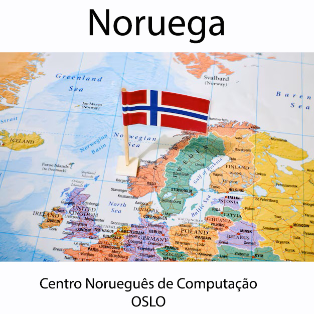
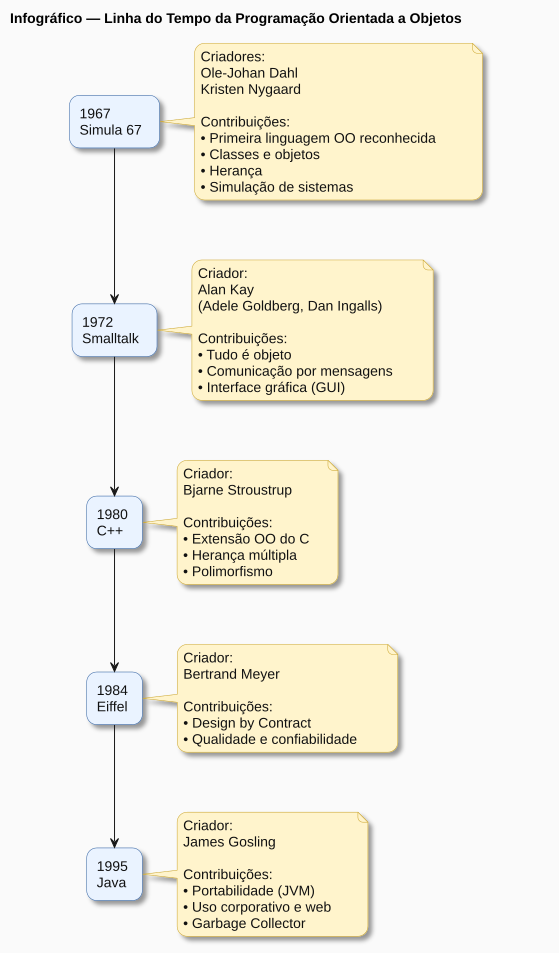
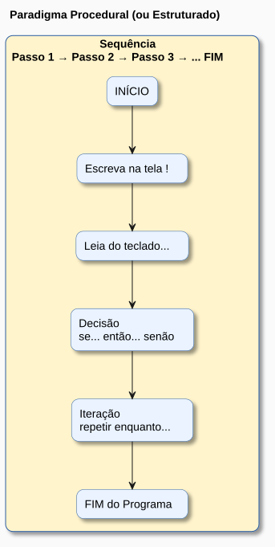
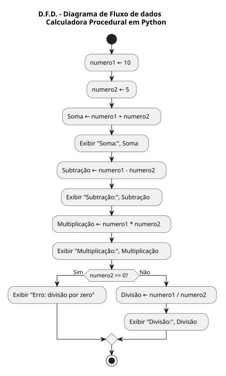

Aula 9 Programação Orientada a Objetos - Parte 1
A principal razão que levou cientistas da computação a criarem o paradigma de programação orientado a objetos foi a abstração. Já nos anos 1960, era percebida uma dificuldade dos engenheiros de software em mapear problemas do mundo real em linguagens de programação da época.
As linguagens de programação de então não davam suporte a um mapeamento claro de objetos do mundo real a variáveis e funções existentes nos códigos dos programas, naquele momento. A prórpia gramática, a estrutura léxica e sintática das linguagens parecia dificultar essa tafera.
9.1 Breve História e Criadores
A Orientação a Objetos (OO) surgiu na década de 1960, fundamentada no conceito de Simulação (simular eventos do dia a dia em sistemas digitais). * Os Criadores: Em 1962, os pesquisadores noruegueses Kristen Nygaard e Ole-Johan Dahl aceitaram o desafio de criar uma linguagem de simulação de eventos discretos, batizada de Simula 67, considerada a primeira linguagem OO de renome. * Popularização: Na década de 70, Alan Kay criou o Smalltalk, que efetivamente tornou a OO conhecida, introduzindo interfaces gráficas e o conceito de que “tudo é objeto”. A popularização massiva ocorreu nos anos 90 com o Java.
 |

9.2 Paradigma Procedural (Estruturado) vs. Orientado a Objetos
9.2.1 Paradigma Procedural:
Foca no “como fazer”. Baseia-se em três estruturas: sequência, decisão e iteração. O problema principal é a Lacuna Semântica, ou seja, a dificuldade de representar a realidade de forma direta, pois dados e operações ficam desassociados no código.
| PARADIGMA DE PROGRAMAÇÃO PROCEDIMENTAL (ESTRUTURADA) | CARACTERÍSTICAS |
|---|---|
| Filosofia | executar sequência, decisão e iteração |
| Dados e Operações CORRELACIONADAS | ficam separados |
| Representação da REALIDADE | Fraca |

9.3 A Evolução do mode de mapear o mundo real em um sistema computacional: ABSTRAÇÃO, REUSO e ENCAPSULAMENTO
Para que uma lingauem de programação pudesse mapear melhor os objetos do mundo real, Dahl e Nygaard chegaram a conclusão que a linguagem precisaria suportar os seguintes requisitos:
Requisito 1 - ABSTRAÇÃO: representar as características essenciais de um objeto do mundo real ocultando detalhes desnecessários de sua implementação em código.
Exemplo de utilidade: A abstração facilita a criação de desenhos e diagramas de sistemas;
Requisito 2 - REUSO: reaproveitamento de código já criado. É a lógica da “peça de lego”.
Exemplo de utilidade: O código que representa uma cadeira pode ser reaproveitado em sistemas BIM de arquitetura que criam uma sala de estar;
Requisito 3 - ENCAPSULAMENTO: ocultar a complexidade e proteger o acesso indevido a conteúdo de variáveis;
Exemplo de utilidade: ao chamar a função desenha_janela(), o desenvolvedor não precisa se preocupar com quais chamadas da biblioteca gráfica do sistema operacional serão utilizadas, focando apenas em atingir o objetivo funcional do seu sistema.
9.4 OS CONCEITOS DE OO APARECENDO NO CÓDIGO
As linguagens antigas precisavam adicionar extensões para implantar os conceitos. A linguagem C, por exemplo, recebeu a adição de uma extensão de gramática e passou a se chamar C++ (linguagem C com suporte a orientação a objetos).
A linguagem JAVA já nasceu orientada a objetos e praticamente obriga o desenvolvedor a utilizar esse paradigma de programação.
A linguagem Python nasceu orientada a objetos com flexibilidade de paradigma;
| Conceito | Recurso adicionado a linguagem |
|---|---|
| ABSTRAÇÃO | CLASSES |
| REUSO | MECANISMO DE HERANÇA |
| ENCAPSULAMENTO | MECANISMO DE ACESSO A CLASSE |
9.4.1 ABORDAGEM PRÁTICA DA TEORIA NA PROGRAMAÇÃO:
Para mim, que estou acostumado com programação estruturada e orientada a um fluxo, como entender um código orientado a objetos (no caso na linguagem python) ?
“OBJETOS SÃO VARIÁVEIS COMPOSTAS (POSSUEM”SUB-VARIÁVEIS”) QUE TAMBÉM INCORPORAM FUNÇÕES. AS VARIÁVEIS DO TIPO OBJETO SÃO CRIADAS ATRAVÉS DE ESTRUTURAS DE MOLDAGEM CHAMAS CLASSES”.
9.5 ABSTRAÇÃO
Para mostrar o conceito de abstração, vamos comparar o mesmo programa feito nos 2 paradigmas diferente: atual PARADIGMA ESTRUTURADO e PARADIGMA ORIENTADO A OBJETOS
9.5.1 COMPARAÇÃO DOS ESTILOS DE PROGRAMAÇÃO - UMA CALCULADORA
Exemplo 1 : Faça uma calculadora em Python utilizando programação estruturada (a que você utilizou até agora):
def somar(a, b):
resultado_soma = (a + b)
return resultado_soma
def subtrair(a, b):
resultado_subtracao = (a - b)
return resultado_subtracao
def multiplicar(a, b):
resultado_multiplicacao = (a * b)
return resultado_multiplicacao
def dividir(a, b):
if b == 0:
return "Erro: divisão por zero"
resultado_divisao = (a / b)
return resultado_divisao
numero1 = 10
numero2 = 5
print("Soma:", somar(numero1, numero2))
print("Subtração:", subtrair(numero1, numero2))
print("Multiplicação:", multiplicar(numero1, numero2))
print("Divisão:", dividir(numero1, numero2))
9.5.2 Paradigma Orientado a Objetos:
Foca no “o que deve ser feito”. Procura diminuir a Lacuna Semântica, criando unidades de código mais próximas da forma como pensamos e agimos.
| PARADIGMA DE PROGRAMAÇÃO ORIENTADA A OBJETOS | CARACTERÍSTICAS |
|---|---|
| Filosofia | REUSO, COESÃO e ACOPLAMENTO no código |
| Dados e Operações CORRELACIONADAS | ficam juntos |
| Representação da REALIDADE | Forte |
Exemplo 1 continuação: Converta a calculadora em Python que você criou utilizando programação estruturada para o paradigma de programação Orientada a Objetos:
class Calculadora:
def __init__(self, numero1, numero2):
self.numero1 = numero1
self.numero2 = numero2
def somar(self):
resultado_soma = ( self.numero1 + self.numero2 )
return resultado_soma
def subtrair(self):
resultado_subtracao = ( self.numero1 + self.numero2 )
return resultado_subtracao
def multiplicar(self):
resultado_multiplicacao = (self.numero1 + self.numero2)
return resultado_multiplicacao
def dividir(self):
if self.numero2 == 0:
return "Erro: divisão por zero"
resultado_divisao = ( self.numero1 + self.numero2 )
return resultado_divisao
objeto_calculadora1 = Calculadora(10, 5)
print("Soma :" , objeto_calculadora1.somar())
print("Subtração :" , objeto_calculadora1.subtrair())
print("Multiplicação:" , objeto_calculadora1.multiplicar())
print("Divisão :" , objeto_calculadora1.dividir())9.6 Conceitos Estruturais (Exemplos em Python)
- Classe: É o “molde” ou abstração base a partir da qual os objetos são criados.
- Atributo: Define a estrutura de dados e as características da classe.
- Método: Define as ações ou comportamentos que a classe oferece.
- Objeto: É a instância (realização) de uma classe.
| NOMENCLATURA - PARADIGMA PROGRAMAÇÃO ESTRUTURADA (OU PROCEDIMENTAL) - python | NOMENCLATURA - PARADIGMA PROGRAMAÇÃO ORIENTADA A OBJETOS - python |
|---|---|
| TIPO DE VARIAVEL ( inteiro, texto, real, booleano, listas, dicionários, clausuras e conjuntos ) | CLASSE |
| VARIÁVEIS COMPOSTAS (listas, dicionários, clausuras, conjuntos) | (“variáveis”) OBJETOS |
| FUNÇÕES | MÉTODOS |
| “sub-variaveis” | atributos de classe |
9.7 COMPARAÇÃO ENTRE PROGRAMAÇÃO OO E PLANILHAS
COMPARAÇÃO ENTRE PROGRAMAÇÃO OO E PLANILHAS ELETRÔNICAS (TABELAS DE EXCEL)
| Conceito OO | Conceito Relacional | Descrição |
|---|---|---|
| Classe | Tabela | Estrutura que define o modelo |
| Atributo | Coluna | Característica (campo) |
| Objeto | Linha (registro) | Instância completa da tabela |
9.8 ENCAPSULAMENTO
Existem 2 níveis de acesso a variável dentro de um objeto criado por uma classe:
Nível de ACESSO Público: Um atributo (sub-variável) de uma variável objeto pode ser acessada e alterada em qualquer local do código principal do programa;
Nível de ACESSO Privado: Um atributo (sub-variável) de uma variável objeto só pode ser acessada e alterada por um método (função) do próprio objeto;
9.8.0.1 EXEMPLO EM PYTHON - OBJETO COM ATRIBUTOS NÍVEL DE ACESSO PÚBLICO
Exemplo onde os objetos criados pela classe “Personagem” tem atributos públicos, ou seja, são acessíveis (pode-se atribuir valor as sub-variaveis dos objetos diretamente em qualquer lugar do programa principal ). Neste exemplo, o objeto mario recebe
class Personagem:
def __init__(self, nome, altura): # Construtor (método especial)
self.nome = nome # Atributo
self.altura = altura
def pular(self): # Método
print(f"{self.nome} pulou!")
# Instanciação de Objetos
mario = Personagem("Mario", 1.60)
mario.pular() # Mensagem enviada ao objeto
mario.nome = "Luiggie"
mario.pular()9.8.0.3 EXEMPLO EM PYTHON - OBJETO COM ATRIBUTOS NÍVEL DE ACESSO PRIVADO
Na linguagem PYTHON, para tornar um os atributos de um objeto nível de acesso PRIVADO, eu preciso colocar 2 caracteres underline “__” no início do nome do da sub-variável (atributo) na classe que vai estruturar o objeto.
class Personagem:
def __init__(self, nome, altura): # Construtor (método especial)
self.__nome = nome # Atributo
self.__altura = altura
def pular(self): # Método
print(f"{self.__nome} pulou!")
# Instanciação de Objetos
mario = Personagem("Mario", 1.60)
mario.pular() # Mensagem enviada ao objeto
mario.__nome = "Luiggie"
mario.pular()9.8.1 O método construtor __init__(self)
class Personagem:
def __init__(self, nome, idade): # Construtor (método especial)
self.nome = nome # Atributo nome
self.idade = idade # atributo idade
def mostrar_personagem(self):
print(f"O personagem é {self.nome}")
print(f"A idade do personagem é {self.idade} anos")
# Instanciação de Objetos
maria = Personagem("Bela Adormecida", 18 )
maria.mostrar_personagem()9.8.2
9.9 Referências
CARVALHO, Thiago Leite e. Orientação a Objetos: aprenda seus conceitos e suas aplicabilidades de forma efetiva. 1. ed. [S.l.]: Casa do Código, [ano não informado].
KON, Fabio. Aula 2: História da Programação Orientada a Objetos. São Paulo: Instituto de Matemática e Estatística, Universidade de São Paulo (IME-USP). Disponível em: https://www.ime.usp.br/~kon/MAC5714/aulas/Aula2.html. Acesso em: 29 abr. 2026.
9.10 EXERCÍCIOS - Programação Orientada a Objetos - Parte 1 -
9.10.1 Exercícios
Exercício 1 - Transoforme o código abaixo do paradigma estruturado para o paradigma Orientado a Objetos:
# Dados do aluno
nome = "Maria"
nota1 = 7.5
nota2 = 8.0
# Função para calcular média
def calcular_media(n1, n2):
return (n1 + n2) / 2
# Função para verificar situação
def verificar_situacao(media):
if media >= 7:
return "Aprovado"
else:
return "Reprovado"
# Processamento
media = calcular_media(nota1, nota2)
situacao = verificar_situacao(media)
# Saída
print("Aluno:", nome)
print("Média:", media)
print("Situação:", situacao)9.10.2 Respostas
Resposta do Exercício 1:
class Aluno:
def __init__(self, nome, nota1, nota2):
self.nome = nome
self.nota1 = nota1
self.nota2 = nota2
def calcular_media(self):
return (self.nota1 + self.nota2) / 2
def verificar_situacao(self):
media = self.calcular_media()
if media >= 7:
return "Aprovado"
else:
return "Reprovado"
def mostrar_dados(self):
print("Aluno:", self.nome)
print("Média:", self.calcular_media())
print("Situação:", self.verificar_situacao())
# Uso da classe
aluno1 = Aluno("Maria", 7.5, 8.0)
aluno1.mostrar_dados()